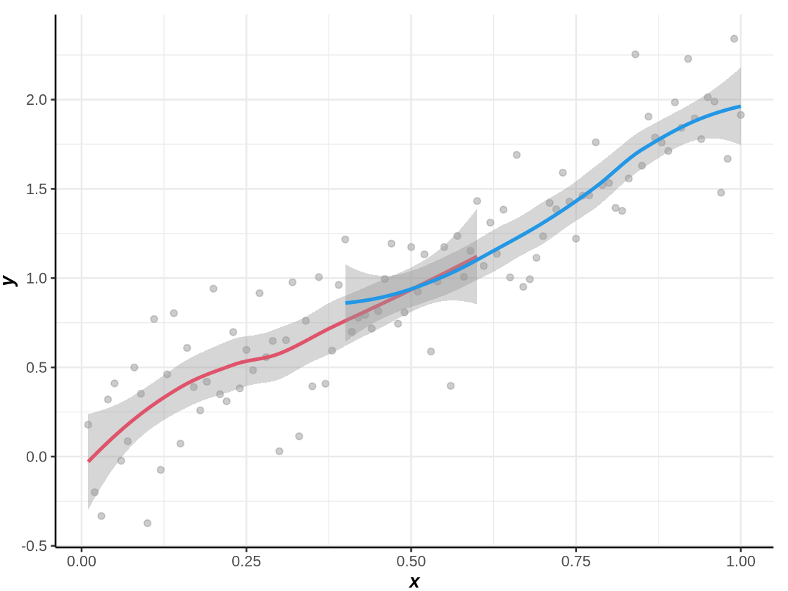
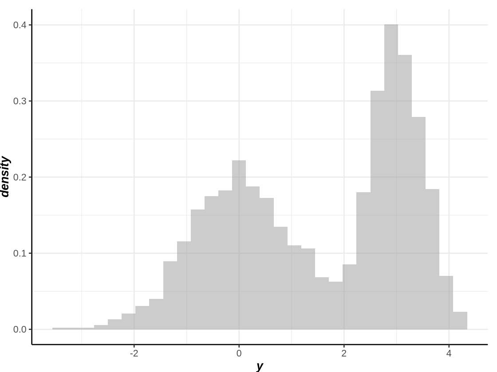

(연구) gglite – 튜토리얼
Options
Imports
library(devtools)
install_github("seoyeonc/gglite",force=TRUE)
library(gglite)
library(tidyverse)
library(patchwork)Loading required package: usethis
Downloading GitHub repo seoyeonc/gglite@HEAD
Attaching package: ‘gglite’
The following objects are masked from ‘package:stats’:
density, line, smooth, step
The following object is masked from ‘package:graphics’:
boxplot
The following objects are masked from ‘package:base’:
col, jitter
── Attaching core tidyverse packages ───────────────────────── tidyverse 2.0.0 ──
✔ dplyr 1.1.4 ✔ readr 2.1.5
✔ forcats 1.0.0 ✔ stringr 1.5.1
✔ ggplot2 3.5.1 ✔ tibble 3.2.1
✔ lubridate 1.9.3 ✔ tidyr 1.3.1
✔ purrr 1.0.2
── Conflicts ─────────────────────────────────────────── tidyverse_conflicts() ──
✖ dplyr::filter() masks stats::filter()
✖ dplyr::lag() masks stats::lag()
ℹ Use the conflicted package (<http://conflicted.r-lib.org/>) to force all conflicts to become errors── R CMD build ──────────────────────────────────────────────────────────────────
✔ checking for file ‘/tmp/Rtmpp0UKTQ/remotes23c2147a25af/seoyeonc-gglite-0a5190e/DESCRIPTION’
─ preparing ‘gglite’:
✔ checking DESCRIPTION meta-information
─ checking for LF line-endings in source and make files and shell scripts
─ checking for empty or unneeded directories
Omitted ‘LazyData’ from DESCRIPTION
─ building ‘gglite_0.1.0.tar.gz’
figsize
주피터 환경에서 그림의 크기를 조정하는 함수로
figsize()구현, Rstudio에서는 그림크기가 유연하게 조정가능하므로 필요없음.
- 기본플랏
- 크기조정 (원래는 ggplot 이미지를 주피터에서 조정하려고 만들었는데, 기본플랏도 조정됨)
기본적인 사용법 소개
gglite + line + point
- 예시1
- 예시2
- 예시3

ggplot2와 호환
| x | y | |
|---|---|---|
| <int> | <dbl> | |
| 1 | 1 | 2.0186628 |
| 2 | 2 | -0.2538571 |
| 3 | 3 | -1.2151861 |
| 4 | 4 | -0.9871983 |
| 5 | 5 | -0.8421076 |
| 6 | 6 | 0.6064969 |
완벽하게 호환가능
subplotting
- 예시1: 좌우로 나란히
- 예시2: 위아래로
- 예시3: 그리드로!
- 예시4: 좀 더 난해한 모양으로 (1)
- 예시5: 좀 더 난해한 모양으로 (2)
- 예시6: 좀 더 난해한 모양으로 (3)
ggtitle
xlab, ylab
legends
wide_y
- 예시1
- 예시2
- 예시3
- 예시3
2D geoms
smooth
- 예시1
`geom_smooth()` using method = 'loess' and formula = 'y ~ x'
- 예시2
gglite()+point(x,y1,alpha=0.5,col="gray60") +
smooth(x[1:60],y1[1:60],col=2) +
smooth(x[40:100],y1[40:100],col=4) `geom_smooth()` using method = 'loess' and formula = 'y ~ x'
`geom_smooth()` using method = 'loess' and formula = 'y ~ x'
- 예시3

step
- 예시1
- 예시2
jitter
1D geoms
histogram
- 예시1
Warning message:
“`stat(density)` was deprecated in ggplot2 3.4.0.
ℹ Please use `after_stat(density)` instead.
ℹ The deprecated feature was likely used in the gglite package.
Please report the issue to the authors.”
`stat_bin()` using `bins = 30`. Pick better value with `binwidth`.
- 예시2
`stat_bin()` using `bins = 30`. Pick better value with `binwidth`.
`stat_bin()` using `bins = 30`. Pick better value with `binwidth`.- 예시3
density
- 예시1

- 예시2
- 예시3
- 예시4

geoms for comparison
col
boxplot
- 예시1
- 예시2
- 예시3
violin
- 예시1
- 예시2
- 예시3